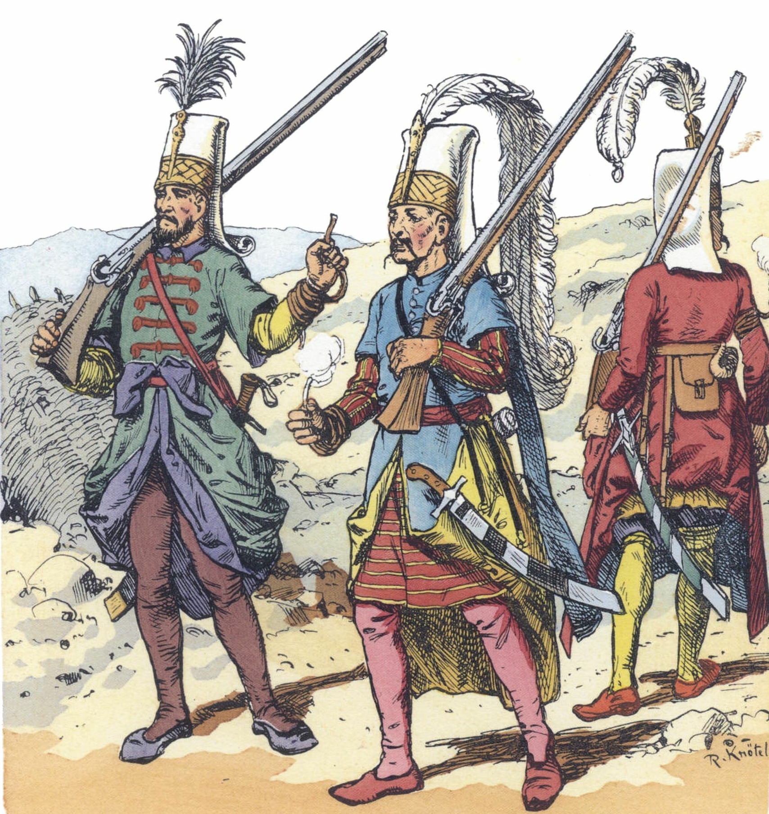

Automatic sigil
About
RPG artefacts for your table
RPG artefacts for your table
Rules
The core rules: gameplay
The core rules: characters
The core rules: characters

The core rules: gameplay
No matching items